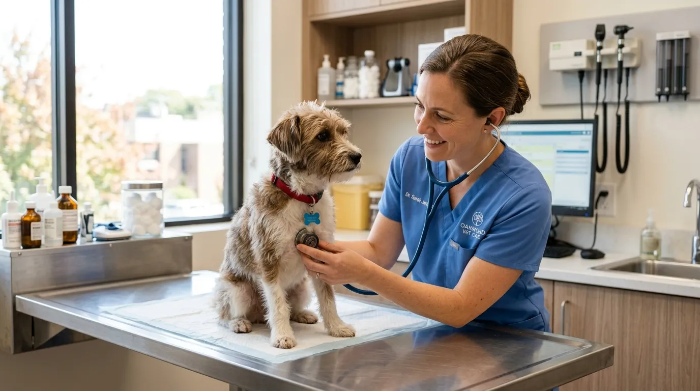
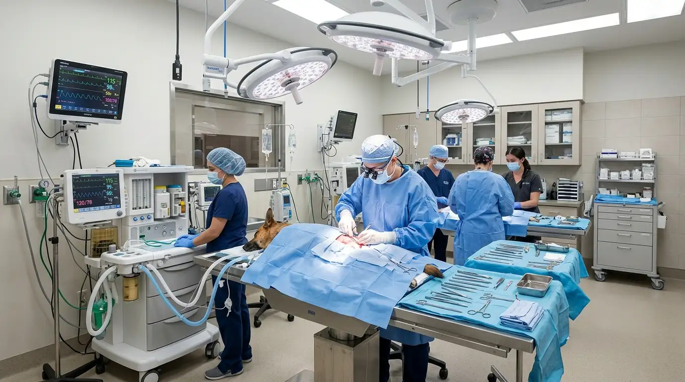
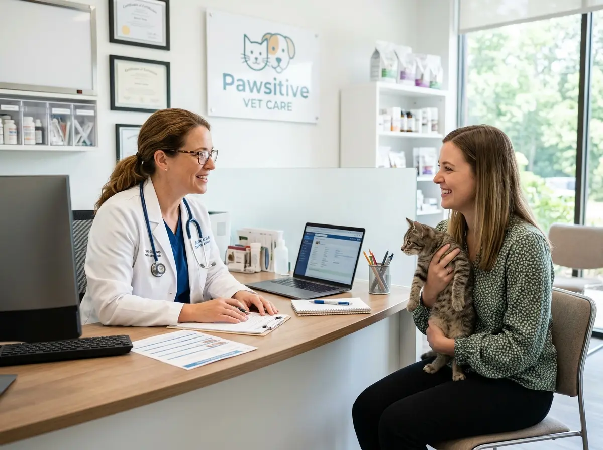
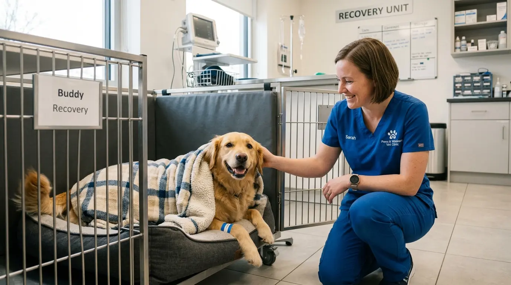

Salem's premier destination for advanced pet medicine and compassionate surgical care.
Founded at MMR Complex, Chinna Thirupathi in Salem, Stackly Veterinary Hospital was established with a singular vision: to provide tertiary-level medical care, emergency trauma intervention, and preventive medicine for dogs, cats, and small animals.
Our multi-specialty facility houses state-of-the-art sterile surgical suites, digital diagnostic imaging, blood pathology laboratories, and comfortable recovery wards.
Flip each card to see the promise behind our hospital culture.
Calm handling for pets — and clear answers for parents.
No rushed consults. Every family leaves knowing the next step.
Evidence-led protocols across surgery and medicine.
Sterile theatres, calibrated imaging, and documented follow-ups.
Serving Salem families with accessible emergency cover.
MMR Complex location with 24/7 trauma readiness on Sundays.
Key milestones that transformed Stackly into Salem's leading multi-specialty pet hospital.

2011Started as a single consult room at MMR Complex, Chinna Thirupathi, focusing on gentle canine and feline outpatient care.

2016Expanded to include a sterile soft-tissue operating theatre, dedicated recovery kennels, and round-the-clock emergency triage.

2021Introduced non-invasive Doppler ultrasound scanning, digital radiography, and ultrasonic dental prophylaxis scaling units.

2026Over 8,500 successful surgeries completed with instant cloud patient portals for vaccine records and prescription tracking.
Every surgeon, nurse, and stylist at Stackly operates under strict ethical guidelines.
Low-stress restraint techniques, warm blankets, and pheromone-calmed consultation rooms for anxious pets.
Clear pre-surgery cost estimates with no hidden medical charges or unverified laboratory tests.
Rigorous multi-stage sterilization protocols for surgical equipment, tables, and patient ward kennels.
Direct doctor follow-up calls and instant WhatsApp symptom guidance during post-operative recovery.
Take a closer look at the specialized departments engineered for high-precision pet healing.
Positive-pressure surgical suite equipped with continuous ECG vitals monitors, gas anesthesia, and sterile instrument autoclaves.
High-resolution Doppler echocardiography, digital X-ray processing, and instant micro-cytology blood analyzers.
Temperature-controlled, quiet patient kennels with oxygen support lines and 24-hour veterinary nurse observation.